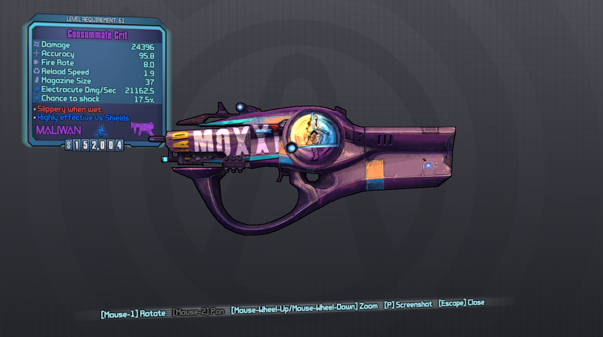

Who dosen't love computer games? Most of us, and the rest just haven't found their first love game yet.
Why do we love games? Seems like a silly question but we'll list some of our resons
Computer games entertain us
When we sit alone in the dark, we can always log into our favorite game and talk to other humans or game characters
Games don't care how you feel or how you look, they are always there for you.
Games can tell deep and personal stories, or let you jump into instant action to forget about the stress of the day.
Other gamers will usually not care about how many friends you have, if you are getting picked on or your race; they'll play with you any how
Dette må organiseres til å se pent ut!
As you can tell games are amazing and we genuinely believe that they improve the life quality of countless people, everyone should share in the joy!
Since other gamers can't see you they judge you purely based on your skills, ignoring everything else. You teammates don't care if you sit in a wheelchair or 2000$ gaming chair.
But all is not well with games today, while the gaming is for all the games are often not made with accessibility in mind.
There have been great strives towards accessibility on the web, guidelines such as WCAG and preasure towards accessible design has made the web a more inclusive and better place for all.
But there are no "wcag" for games, it is up to the game company if they want to make the game inclusive, and far too often accessibility is being neglected.
We want games to be for everyone and made this website to use for all that make games, use games and review games. We have compiled guidelines on how to make games more accessible
It is our hope that with this gamemakers can easily see what to do to make their games more accessible, and game reviewers and buyers can start caring about accesibility when deciding what games to buy
1.1 Color should never be used as the only visual means to convey information, indicating an action, prompting a response, or distinguishing a visual element.
1.2 It should be possible to adjust the darkness/brightness setting of the game
1.3 There should be settings to change menu fonts, subtitle font, font color, font size and subtitle location.
1.3.1 Location of text should be changeable and not restricted to corners or bottoms of screen to accommodate players with tunnel vision.
1.3.2 When displaying data with both text and color represesentation there should be an option to enable various color blind modes. See types of color blindness
1.4 Subtitles should be in or have the option to be in clear to see letterboxes

Auditory
2.1 No information needed for game progression should be solely represented by audio.
2.2 Speech and important sound events should be subtitled.
2.2.1 It should be easy to enable subtitles.
2.3 Audio events should include visual cues.
2.4 The game should provide separate audio controls for speech, music and audio effects.
2.5 Keep background noise low during in game speech
2.6 Visualize who is currently speaking and make it clear who is making noise if the noise maker is visible.
2.7 Provide text and voice chat for online games, have an ability to turn voice, text or both chats of and on
2.8 Visualize who can hear the voice chat and who has voice chat disabled
2.9 Let the user decide between stereo and mono audio